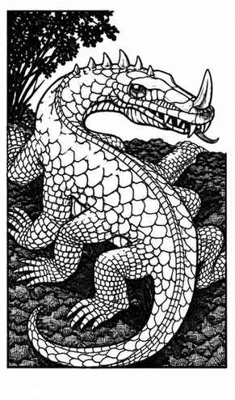

石化蜥蜴 · Basilisk
 |
|
石化蜥蜴是一种爬行动物怪物。它有八条腿，但新陈代谢缓慢，因此行动也慢。它虽然长着强壮的利齿，主要武器却是凝视：任何与其目光相遇的有血肉生物都会变成石头。如果石化蜥蜴的凝视被反射回来，使它看见自己的双眼，它自己也会石化；不过，这需要至少达到明亮火把的光线，以及一面平滑良好的反光物。
石化蜥蜴通常呈暗褐色，腹部泛黄，双眼发出淡绿色光芒。它能看见星界位面和以太位面中的事物：在星界位面，其凝视会杀死目标；在以太位面，则会把受害者变成以太石像，只有身处该位面或能够看见以太物体的生物才能看到。